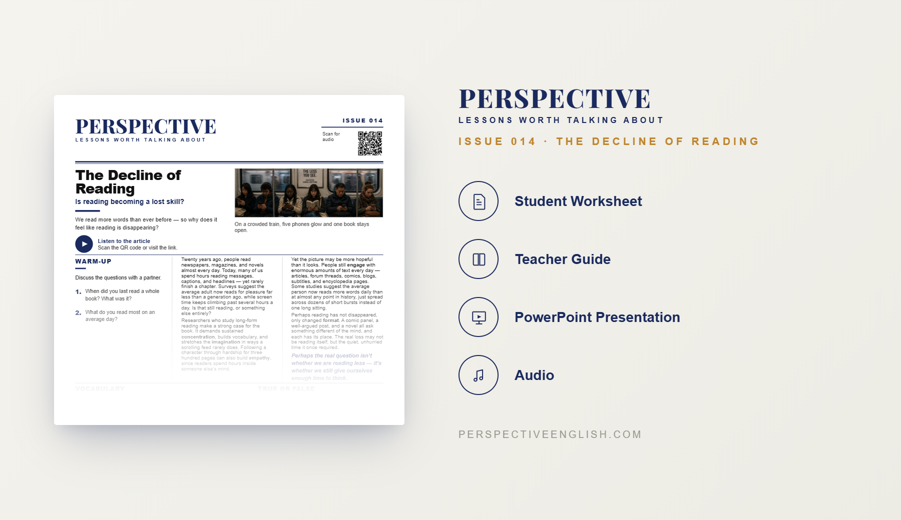

ISSUE 014
The Decline of Reading
Are we forgetting how to read?
A ready-to-teach English lesson exploring why people are reading fewer books, how smartphones have changed our habits, and what we might lose when reading disappears.
Collection 02 includes Issues 011–015.

LESSON PREVIEW

ABOUT THIS LESSON
For centuries, reading has been one of the main ways people learn, relax, share ideas, and understand the world.
This magazine-style English lesson explores why people are reading fewer books, how smartphones and social media compete for our attention, and what the decline of reading could mean for society.
Students read an original article, learn useful vocabulary, and take part in discussion, critical thinking, speaking, and writing activities about books, technology, attention, and changing habits.
FROM THE ARTICLE
WHAT'S INCLUDED
- Magazine-style student worksheet
- Original article and audio recording
- Vocabulary and reading activities
- Discussion and critical-thinking tasks
- Speaking challenge and writing prompt
- Teacher guide and complete answer key
- Classroom presentation
GET THE COMPLETE LESSON
Ready to teach The Decline of Reading?
Purchase this lesson individually or save with Perspective Collection 02.
Secure checkout and instant digital delivery through Payhip.